6th to 12th July 2024
Hello again. In this post we are talking about the week I spent in Chicago. Called the windy city (both for geographic and political reasons), Chicago is a big one being the largest city in the midwest. Although a bit like London the majority of the population live a long way from the center where the actual boundaries of the city of Chicago lie. Flying in you can see the massive metropolitan area this town covers in the state of Illinois. Here's a photo of the city on the flight in; the skyscraper filled center is just a small percentage of this urban sprawl.
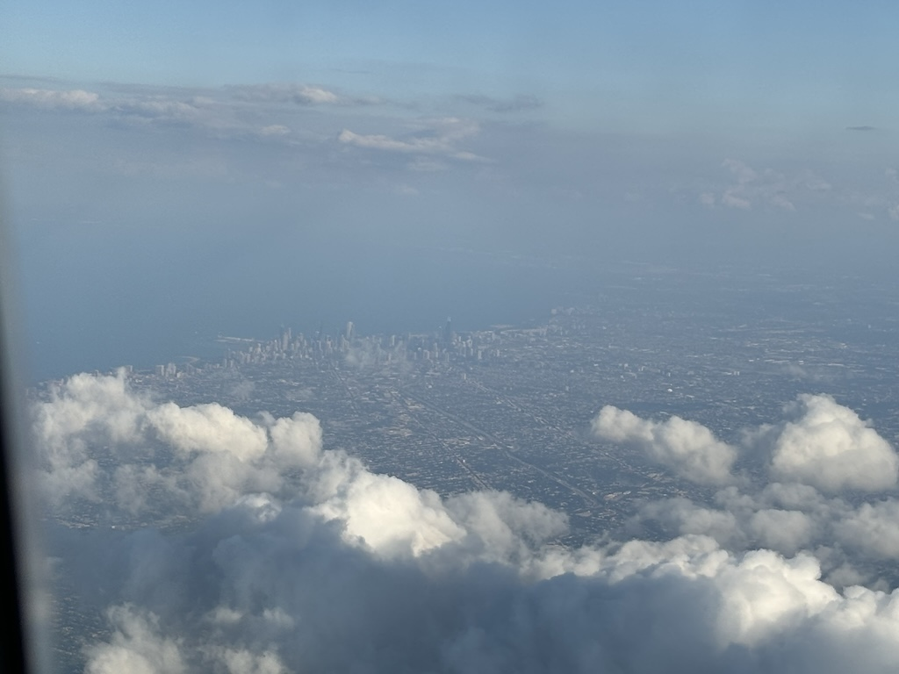I landed, checked into my hostel and then had just enough time to get some dinner. I've barely eaten yet this day and as it's so famous I just couldn't say no to a Chicago deep dish pizza, distinct from having the tomato sauce atop the cheese. The one below cost me $20 and after only being able to finish 2/3rds of it when sat at this bar it fed me for 2 days. If you like loads of cheese inside your pizza, trust me, you'll love one of these.
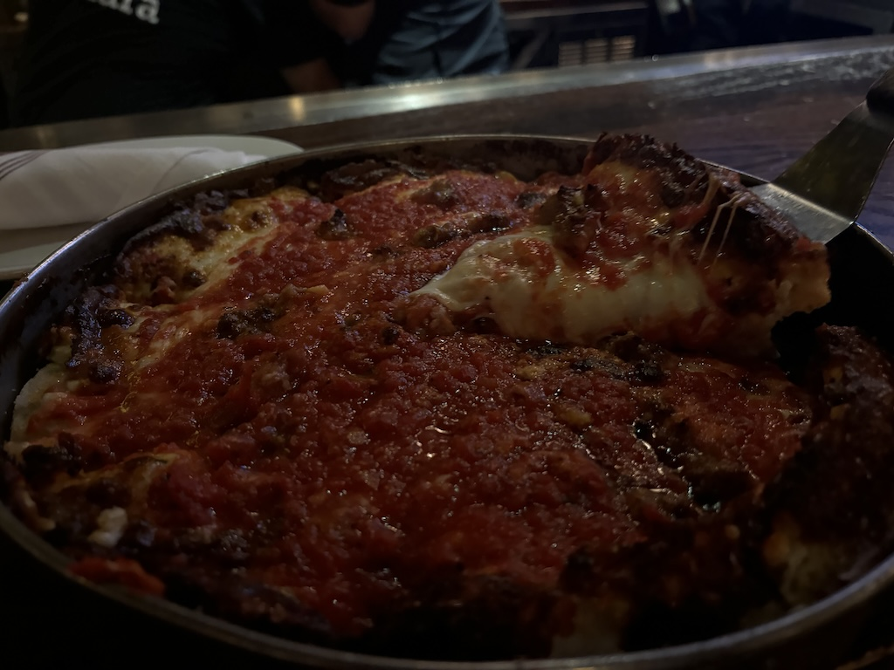Day one is always spent just exploring the very city center which in Chicago basically means going to Millennium Park. Here is my personal shot of arguably the most photographed thing in this town, the Bean. I'd bet there's a photo taken of it every second during the day, the place was swarmed. However as much as I joke on the number of photos there are of this thing it is very cool to look at.
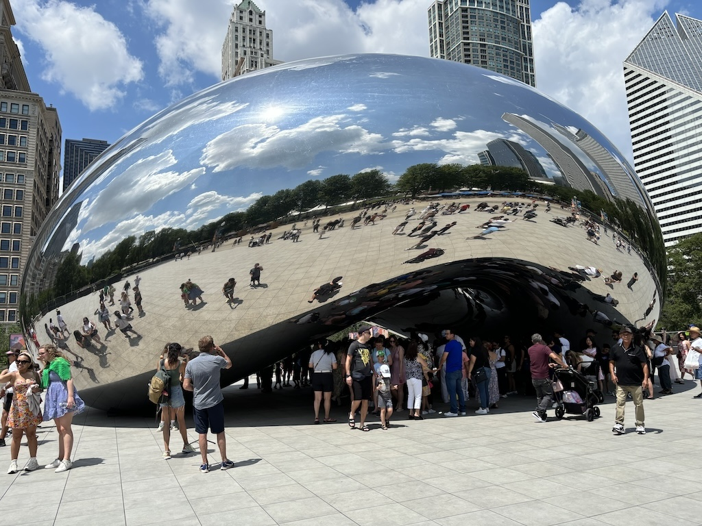Especially from the inside! I had only seen what it looks like from outside before visiting, but in the middle of it is definitely the most interesting view. It's distorted mirror surface produces some wacky reflections. The very center is like a shrunken down straight reflection of everyone underneath. The rest of it I can't quite wrap my head around.
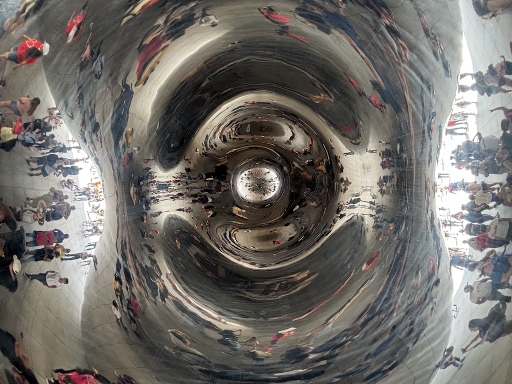I went around a few other parts of the park but most of it was actually closed off for the big event in town this weekend. Nascar were running a street race and by pure luck I was in town on race day. They had fenced off a bunch of streets in this central part of the city with tyres and concrete blocks. This was the north entrance which I can confirm was the only one with a car on top of it. Inside was a bunch of stalls and venders selling stuff as well as a load of businesses doing interactive things. I had a go at the US Marine Core pull up bar challenge but fell 2 pull ups short of winning a water bottle. Like a 10 year old they cheered me up with a free sticker, which worked.
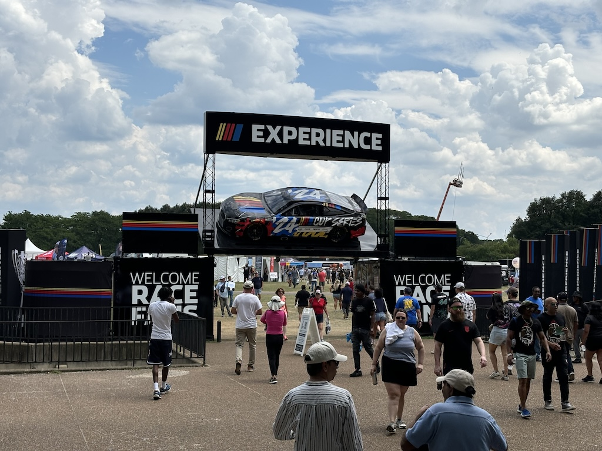I assume Monster is a big sponsor of Nascar from the many trucks giving out free cans of monster. I managed to get a couple of cans visiting a few different ones as I wandered around.
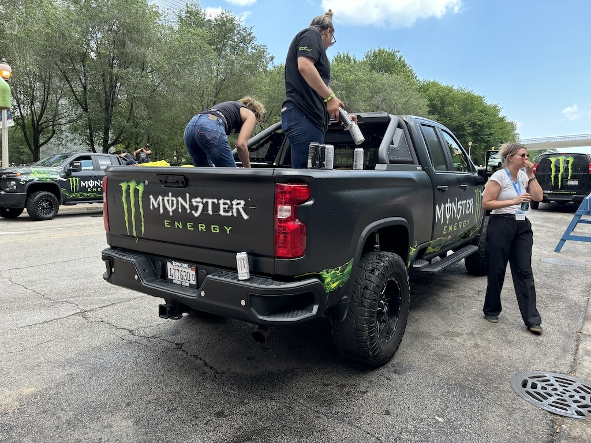I walked all around the edge of the track trying to find a spot to watch the race for free. Some people had the same idea as me sitting on camping chairs on the edge of corners where the barriers had gaps. Without any good finds, I gave up on it and headed to the bottom of Grant Park and took in the view where the city meets the great lake.
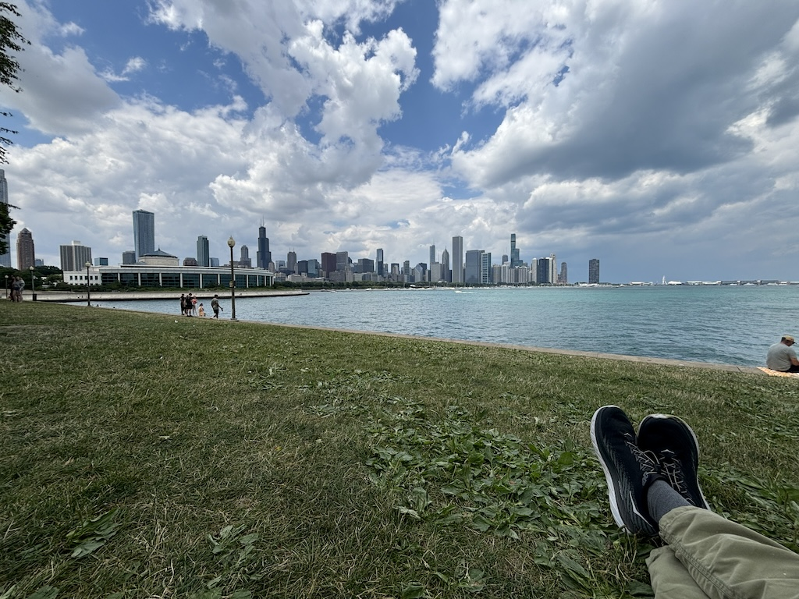Unwilling to spend a huge chunk of cash to watch the race live and unable to find any other spots to watch it from I ended up heading to a bar nearby to watch their instead. After meeting a bunch of nice lads at 2Twenty2 (one of them celebrating his birthday) I settled in and enjoyed the race. It was definitely the right move; shortly after I entered a huge rainstorm started pausing the race at one point. People came into the bar halfway the race who had been in the stands and couldn't take the bad weather. A stroke of luck from me, buying a ticket for it to immediately start raining would have been awful.
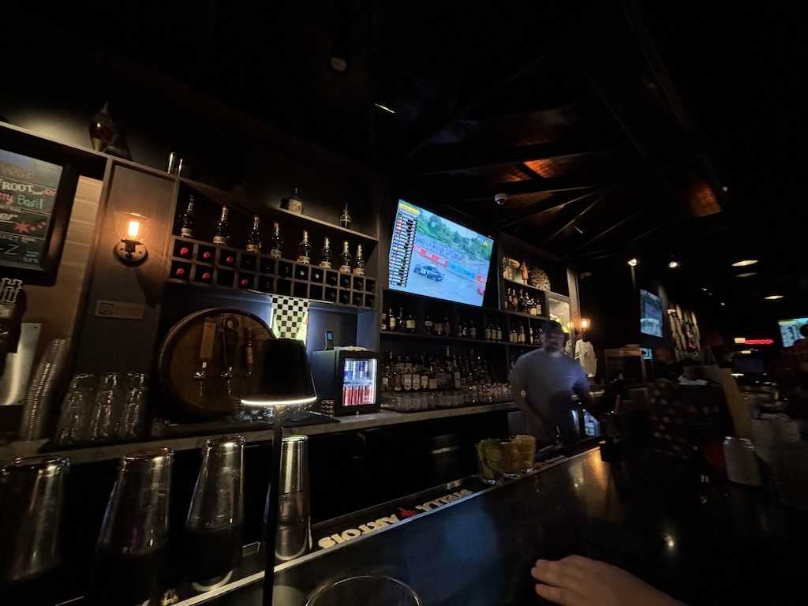The city at night is a real spectacle with many uniquely shaped skyscrapers. This is the Wrigley building and besides being ridiculously patriotic it is one of my favourites. I guess it's kinda like the flat iron building in New York being squeezed in-between 2 off set streets meeting each other. Also I challenge you to find someone who doesn't love a clock tower. Very cool building.
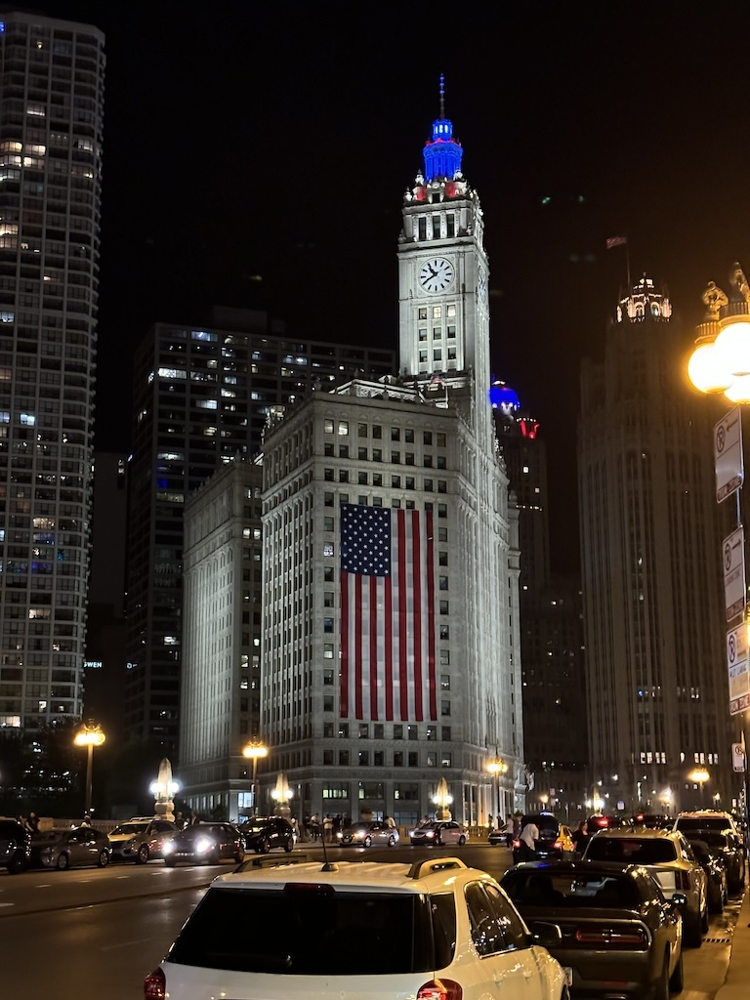The next day I explored Navy Pier. It's a mix of small shops, chain restaurants and this bar at the very end. It claims to be the biggest bar in terms of square feet in the area. If the timings had lined up I'd definitely have come here to watch the Euros final.
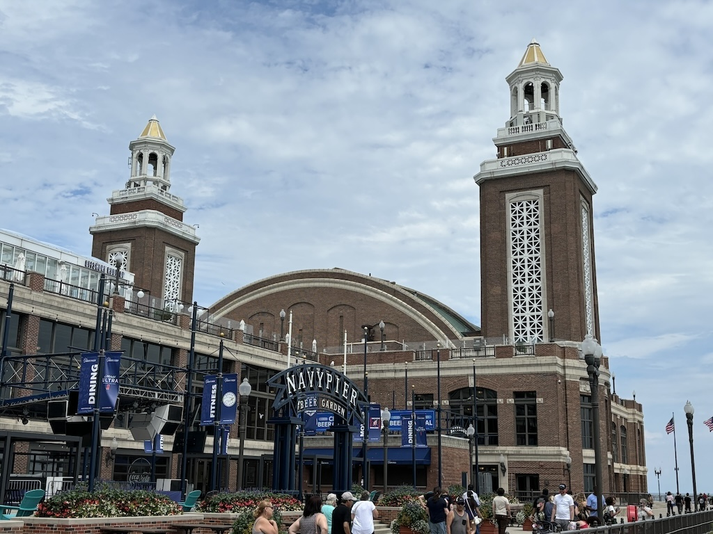I earlier mentioned while watching the Nascar race in bar 2Twenty2 that due to the rain lots of people were streaming in. Well one such guy who came in to shelter from the rain was Jose. Jose works at the Chicago White Sox as a ticket seller and is a short smiley man who, like me, loves a good chat. We discussed the weather, the race and after telling him I was a tourist what to do while in Chicago. This is when Jose tells me which booth he works in and offers me 2 free tickets to a day time baseball game that Wednesday. Of course I thanked him, accepted the offer and said I'd see him there. This was the view from the tickets Jose was able to get me. It was an alright game, but meeting Jose at the gate and having that view of the game was awesome.
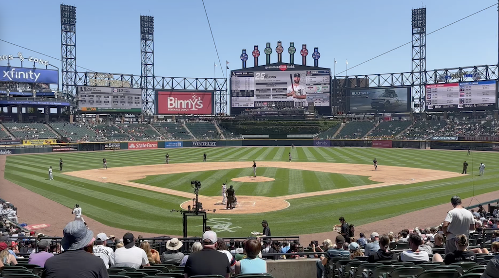Later on in the week I took the train south to the Griffin Museum. This is I think the biggest museum in Illinois, with lots of sections on science and innovation. After picking up the map for the full museum I had to head straight to the space exploration section first. They had the original cockpits from one of the SpaceX Dragon rockets that went to the ISS.
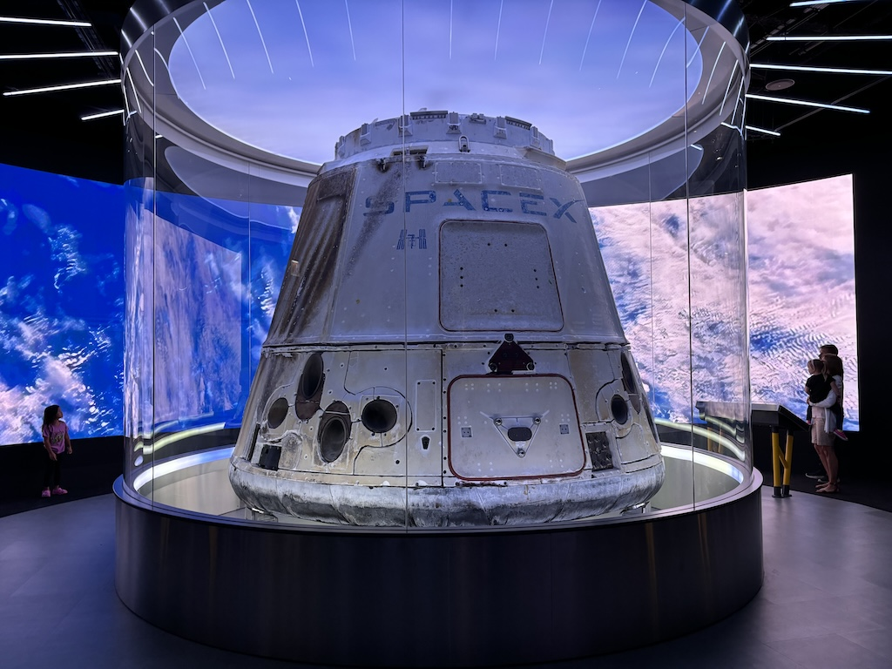Another exhibit on at the time that actually required a timed entry ticket was the one featured below. It included a short movie in front of this grid of tilted screens talking about the importance of water and the damage of pollution.
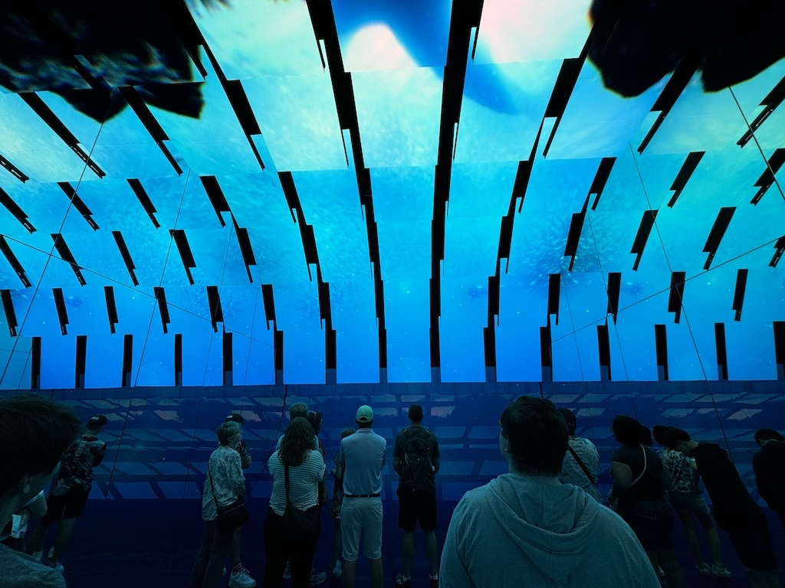After the movie ends you are free to roam around the rest of the exhibit. This first room felt like a tech convention display, housing screens around the wall showing facts about pollution across the globe. Futuristic and bright, it was a cool place to sit.
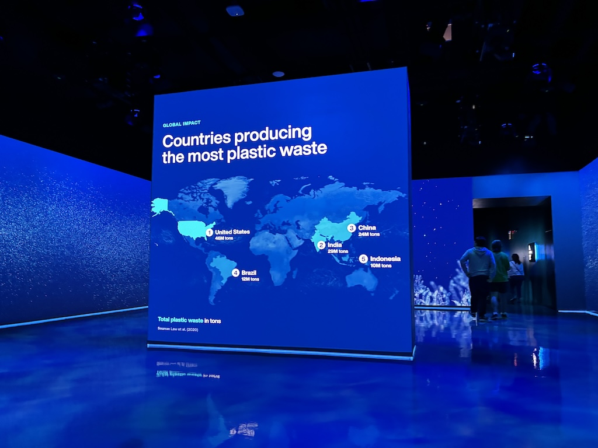A bike exhibit housed a bunch of different kinds of bike, including a cardboard bike and one wheeler.
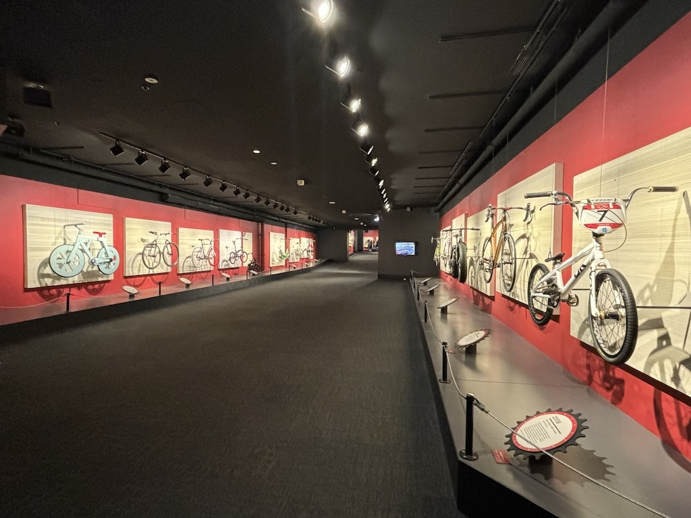There was much more to this massive museum but the last thing I wanted to highlight was the large model train. They recreated the scenery and cities of Chicago and Seattle, modelling what the route would look like between these big cities.
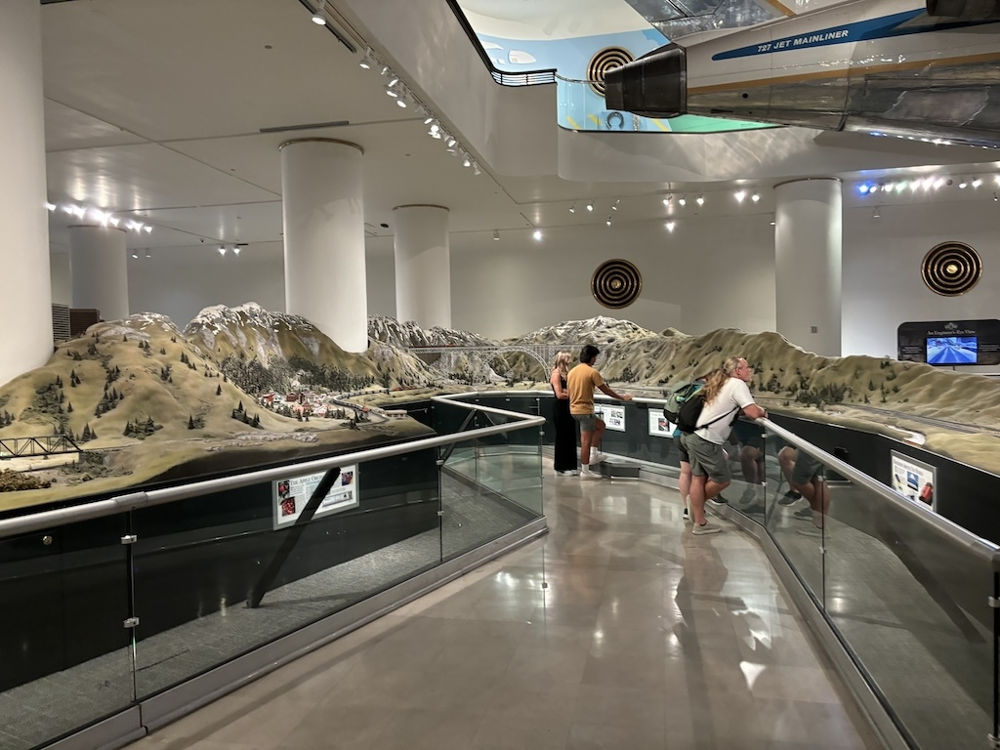The final major thing I did while visiting Chicago was the one thing everyone kept telling me I had to do - take a boat tour. I suspected it was probably one of those tourist trap sort of attractions where you pay far too much for something you can pretty much do on foot. However after multiple people I asked mentioned it was worth it I did book a ticket for a tour on my final day. My tip would be to buy the tickets on Groupon - I managed to get it for $28 instead of $48, a sizeable discount. Here's us on the boat turning at the lakeside end of the river.
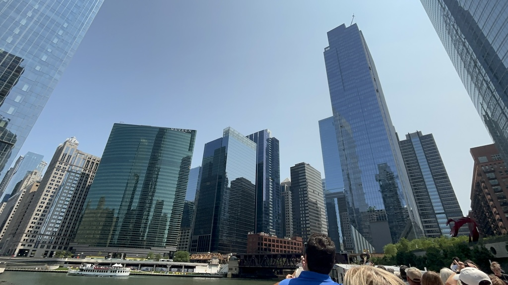Chicago boasts a wide variety of shapes in its skyscrapers. The tour guide taught us about the various architects for and design styles of the buildings. It turns out a lot of the iconic buildings are designed by female architects, including the one below. THe floor that looks like it's missing on the far right tower is in fact exactly that. The gap has been added to allow air through to reduce shaking the building during thunderstorms.
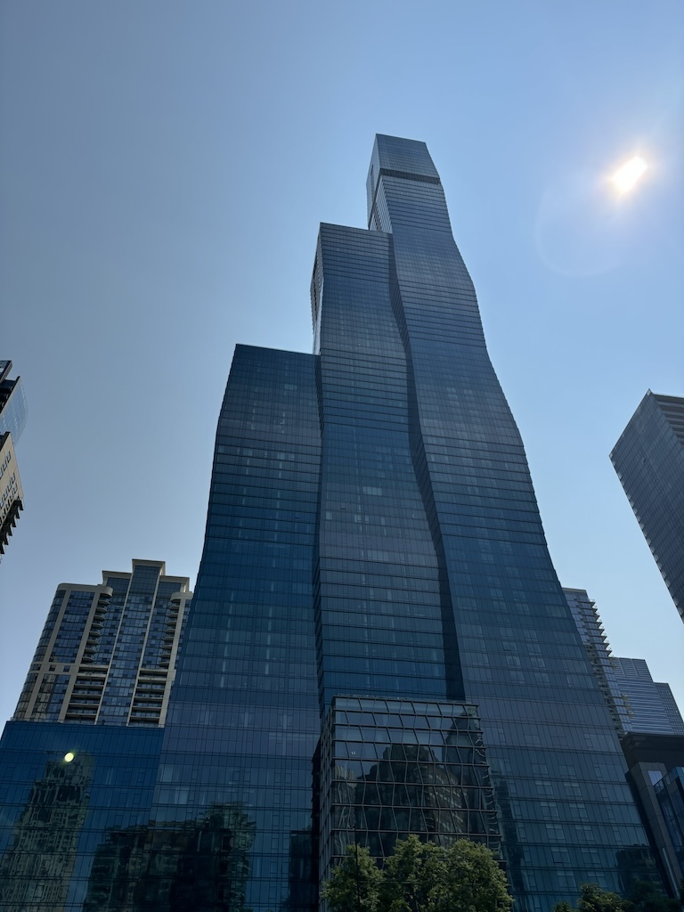I wanted to also include this photo of this old train bridge just because I thought it looked cool. After I snapped this the tour guide did say it was a good photo as it has a good view of the skyline of the city in the background.
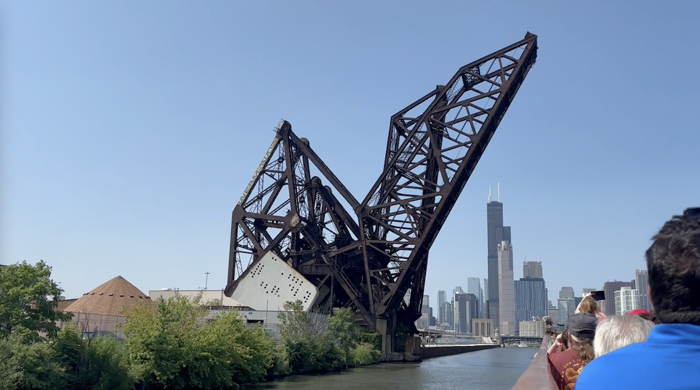That night my dorm roommate Leonard from Atlanta Georgia and I went out for drinks. At 02:30 bars here are still lively and open, I guess showing re runs of recent Nascar races and the tennis?
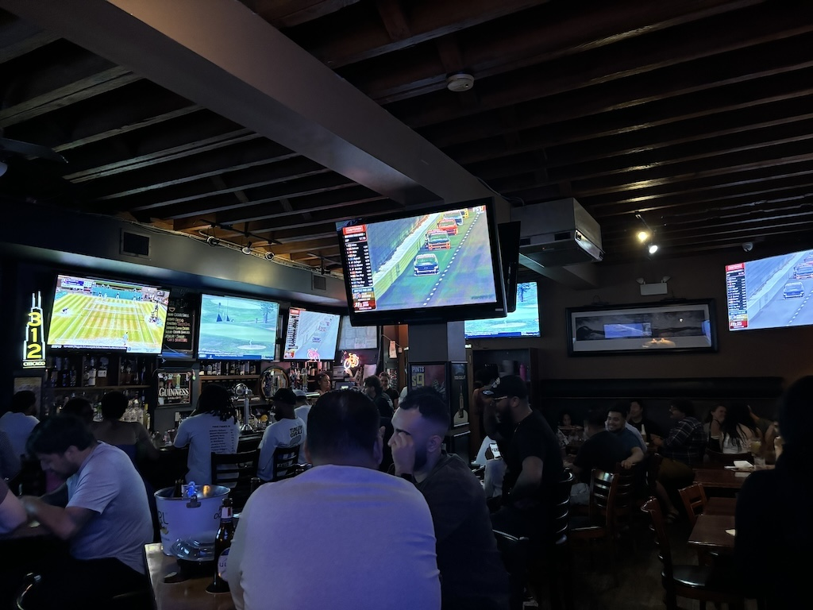Anyway, it was a great night and was great fun chatting over a beer with someone from the South. The next day I flew out west.
Where did I land? That's written up and ready-to-go right here. Otherwise return home.